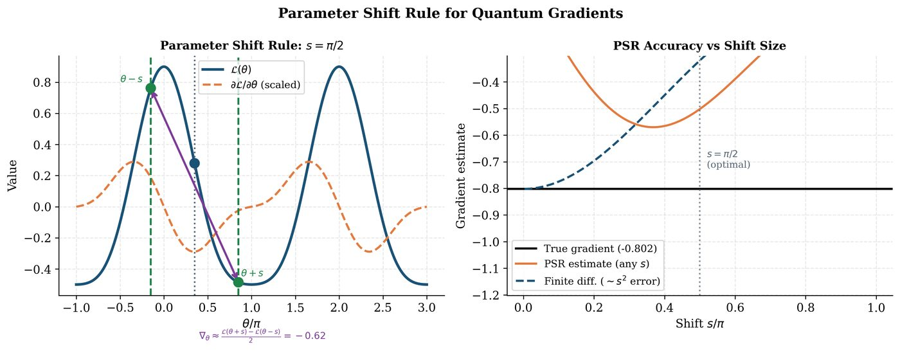

Chapter 15: Optimization and Training of Quantum Models¶
Training variational quantum circuits requires computing and applying gradients in a quantum-compatible way. This chapter presents the complete theory of the parameter-shift rule (PSR), quantum natural gradient (QNG), Rotosolve, SPSA, and advanced optimizers. We also discuss the challenges of gradient estimation noise, shot budgets, and practical training recipes for NISQ devices.
Learning Objectives
By the end of this chapter, you will be able to:
-
Derive the full parameter-shift rule for arbitrary generators
-
Implement quantum natural gradient with the quantum Fisher information metric
-
Apply Rotosolve for exact trigonometric function minimization
-
Estimate gradients under finite-shot noise and design shot budgets
-
Select appropriate optimizers for different quantum training scenarios
15.1 Parameter-Shift Rule: Complete Derivation¶
15.1.1 Single-Parameter Shift Rule¶
Consider a quantum circuit \(U(\theta) = e^{-i\theta G/2}\) where \(G\) is a Hermitian generator with eigenvalues \(\pm r\) (for \(r=1/2\), this is Pauli rotations).
Definition: Parameter-Shift Rule (Mitarai et al., 2018; Schuld et al., 2019)
For a circuit \(U(\theta) = e^{-i\theta G/2}\) with generator eigenvalues \(\pm r\), the gradient of expectation value \(f(\theta) = \langle\hat{O}\rangle_\theta\) is:
For Pauli rotations (\(G\in\{X,Y,Z\}\), \(r=1/2\), shift \(s=\pi/2\)):
Proof sketch: Since \(U(\theta)|\psi\rangle\) is periodic in \(\theta\) (period \(4\pi\) for Pauli rotations), \(f(\theta)\) is a trigonometric polynomial. By Fourier analysis, the gradient of a trigonometric polynomial with frequencies \(\{r\}\) is exactly given by the finite difference formula Eq. (15.1).
15.1.2 Generalized Parameter-Shift Rule¶
For a generator \(G\) with arbitrary eigenvalue spectrum \(\{r_k\}\), the generalized PSR (Wierichs et al. 2022) is:
where the shifts \(\{s_k\}\) and coefficients \(\{c_k\}\) are determined by the eigenvalue differences \(\{r_j - r_k\}\). For a generator with \(N\) distinct eigenvalues, at most \(2(N-1)\) evaluations are needed.
Solved Example 15.1
Problem: Apply the PSR to compute \(\partial\langle Z\rangle/\partial\theta\) for the circuit \(R_z(\theta)|+\rangle\).
Solution: Initial state: \(|+\rangle = (|0\rangle+|1\rangle)/\sqrt{2}\). After \(R_z(\theta) = e^{-i\theta Z/2}\): \(|\psi(\theta)\rangle = \frac{1}{\sqrt{2}}(e^{-i\theta/2}|0\rangle + e^{i\theta/2}|1\rangle)\).
Expectation: \(f(\theta) = \langle Z\rangle = \frac{1}{2}(e^{-i\theta/2}\cdot 1 \cdot e^{i\theta/2} + e^{i\theta/2}\cdot(-1)\cdot e^{-i\theta/2}) = 0\).
Hmm, \(f(\theta)=0\) always, so \(\partial f/\partial\theta = 0\).
Let us try \(\langle X\rangle\) instead: \(f(\theta) = \langle X\rangle = \cos\theta\). By PSR: \(\frac{1}{2}[f(\theta+\pi/2) - f(\theta-\pi/2)] = \frac{1}{2}[\cos(\theta+\pi/2) - \cos(\theta-\pi/2)] = \frac{1}{2}[-\sin\theta + \sin\theta]\cdot 2 = -\sin\theta\).
Verify: \(\frac{d}{d\theta}\cos\theta = -\sin\theta\). ✓
15.1.3 Gradient Estimation Under Finite Shots¶
With \(M\) shots per circuit evaluation, the gradient estimator has variance:
since \(\mathrm{Var}[\hat{O}]\leq 1\) for bounded observables \(\|\hat{O}\|\leq 1\).
Note
To achieve gradient estimation error \(\epsilon\), one needs \(M = O(1/\epsilon^2)\) shots per parameter per gradient step. For \(p\) parameters, total shots per step: \(2pM = O(p/\epsilon^2)\). This scales linearly in \(p\) – the same as classical automatic differentiation in terms of parameters, but with quantum overhead.
15.2 Quantum Natural Gradient¶

15.2.1 Motivation: Riemannian Optimization¶
Standard gradient descent on parameter space \(\mathbb{R}^p\) ignores the geometry of the quantum state space (a Riemannian manifold with the Fubini-Study metric). This leads to suboptimal trajectories and slow convergence.
Definition: Quantum Natural Gradient (Stokes et al., 2020)
The Quantum Natural Gradient (QNG) (Stokes et al. 2020) update is:
where \(F(\boldsymbol{\theta})\) is the quantum Fisher information matrix (QFIM):
and \(F^+\) denotes the Moore-Penrose pseudoinverse.
The QNG moves along the steepest descent direction in the space of quantum states (Fubini-Study geometry), rather than Euclidean parameter space.
15.2.2 Computing the QFIM¶
Using the PSR, individual QFIM entries can be computed as:
For a \(p\)-parameter circuit, the QFIM has \(O(p^2)\) entries, each requiring \(O(1)\) circuit evaluations via Hadamard tests.
Tip
Block-diagonal approximation: In practice, use the block-diagonal approximation \(F \approx \text{blockdiag}(F_1, F_2, …)\) where each block corresponds to one layer. This reduces computation from \(O(p^2)\) to \(O(p)\) while preserving most of the geometric benefit.
15.3 Rotosolve¶
Definition: Rotosolve (Ostaszewski et al., 2021)
For a circuit \(U(\theta_k)\) where the \(k\)-th parameter appears only via \(R_y(\theta_k)\) (or any Pauli rotation), the loss \(f(\theta_k)\) is a trigonometric function:
Rotosolve finds the exact global minimum in \(\theta_k\) using only 3 function evaluations:
Rotosolve cycles through all parameters, updating each to its exact optimum while holding others fixed – a quantum coordinate descent.
Convergence: Rotosolve converges monotonically (loss decreases at each step). For \(p\) parameters, one full sweep requires \(3p\) circuit evaluations.
Solved Example 15.2
Problem: Apply one Rotosolve step to minimize \(f(\theta) = \sin\theta + 2\) starting from \(\theta_0 = 0\).
Solution: Evaluate at 3 points: \(f(0) = 0 + 2 = 2\), \(f(\pi/2) = 1 + 2 = 3\), \(f(-\pi/2) = -1 + 2 = 1\).
Apply formula: \(\theta^* = -\frac{\pi}{2} - \arctan\left(\frac{2(2) - 3 - 1}{3 - 1}\right) = -\frac{\pi}{2} - \arctan\left(\frac{0}{2}\right) = -\frac{\pi}{2}\).
Verify: \(f(-\pi/2) = -1 + 2 = 1 = \min_\theta[\sin\theta + 2]\). ✓
15.4 Simultaneous Perturbation Stochastic Approximation¶
Definition: SPSA (Spall, 1992)
SPSA estimates the gradient using only 2 circuit evaluations regardless of the number of parameters:
where \(\Delta\in\{-1,+1\}^p\) is a random Rademacher vector and \(c>0\) is a perturbation size. \(\Delta^{-1}\) denotes element-wise reciprocal.
SPSA convergence: Under standard conditions, SPSA achieves \(O(1/\sqrt{T})\) convergence in \(T\) iterations, same asymptotic rate as SGD but with \(O(1)\) circuit evaluations per step vs. \(O(p)\) for PSR.
Important
When to use each optimizer:
-
PSR + Adam: Default choice. Accurate gradients, GPU-friendly via PennyLane automatic differentiation.
-
QNG: When geometry matters (non-convex landscapes, small shot budgets). Higher per-step cost but faster convergence per iteration.
-
Rotosolve: For shallow circuits with independent single-qubit rotations. Guaranteed monotone descent, no learning rate tuning.
-
SPSA: Large \(p\) (many parameters), tight shot budgets, hardware experiments where circuit re-runs are expensive.
15.5 Shot Budget Management¶
15.5.1 Optimal Shot Allocation¶
For \(p\) parameters each requiring gradient estimation, total shots per step:
Frugal shot optimization: Allocate more shots to parameters with larger gradient magnitudes (importance sampling):
15.5.2 Stochastic PSR¶
Use \(M=1\) shot per evaluation (stochastic gradient):
-
Much cheaper: \(2p\) circuit calls per step
-
Higher variance: requires more steps
-
Effective for large \(p\) regimes
15.6 Implementation: Optimizer Comparison¶
import pennylane as qml
import numpy as np
from pennylane import qchem
# Hydrogen molecule (minimal basis)
symbols = ["H", "H"]
geometry = np.array([[0.0, 0.0, -0.6614], [0.0, 0.0, 0.6614]])
hamiltonian, n_qubits = qchem.molecular_hamiltonian(symbols, geometry)
dev = qml.device("default.qubit", wires=n_qubits)
n_layers = 2
@qml.qnode(dev, interface="torch", diff_method="parameter-shift")
def ansatz(params):
qml.BasisState(np.array([1, 1, 0, 0]), wires=range(n_qubits))
qml.DoubleExcitation(params[0], wires=[0, 1, 2, 3])
return qml.expval(hamiltonian)
import torch
import torch.optim as optim
def run_optimizer(opt_name, n_steps=200):
params = torch.tensor([0.1], dtype=torch.float64, requires_grad=True)
if opt_name == "adam":
opt = optim.Adam([params], lr=0.1)
elif opt_name == "sgd":
opt = optim.SGD([params], lr=0.05)
losses = []
for step in range(n_steps):
opt.zero_grad()
loss = ansatz(params)
loss.backward()
opt.step()
losses.append(loss.item())
return losses
# Run all optimizers
results = {}
for name in ["adam", "sgd"]:
results[name] = run_optimizer(name)
print(f"{name.upper():4s}: final E = {results[name][-1]:.6f} Ha")
# Quantum Natural Gradient (PennyLane built-in)
params_qng = np.array([0.1])
opt_qng = qml.QNGOptimizer(stepsize=0.1)
@qml.qnode(dev, diff_method="parameter-shift")
def ansatz_np(params):
qml.BasisState(np.array([1, 1, 0, 0]), wires=range(n_qubits))
qml.DoubleExcitation(params[0], wires=[0, 1, 2, 3])
return qml.expval(hamiltonian)
qng_losses = []
for step in range(100):
params_qng, loss_val = opt_qng.step_and_cost(ansatz_np, params_qng)
qng_losses.append(loss_val)
if (step + 1)
print(f"QNG step {step+1:3d}: E = {loss_val:.6f} Ha")
# SPSA optimizer
params_spsa = np.array([0.1])
spsa_losses = []
c = 0.1 # perturbation
a = 0.05 # step size
for step in range(200):
delta = np.random.choice([-1, 1], size=params_spsa.shape)
f_plus = ansatz_np(params_spsa + c * delta)
f_minus = ansatz_np(params_spsa - c * delta)
grad_est = (f_plus - f_minus) / (2 * c) * (1 / delta)
# Decaying step size
a_k = a / (1 + step * 0.01)
params_spsa -= a_k * grad_est
spsa_losses.append(ansatz_np(params_spsa))
print(f"\nSPSA final energy: {spsa_losses[-1]:.6f} Ha")
print(f"FCI reference: -1.136189 Ha")
15.7 Chapter Summary¶
Chapter Summary
-
PSR: Exact quantum gradient via \(2p\) circuit evaluations. For Pauli generators: shift \(s=\pi/2\). Generalized to arbitrary generators with multiple frequencies (Wierichs et al., 2022).
-
QNG: Preconditions gradient with quantum Fisher information matrix (Fubini-Study metric). Faster convergence per iteration, higher per-step cost.
-
Rotosolve: Exact coordinate-wise minimization for single-parameter trigonometric functions. \(3p\) evaluations per sweep, monotone descent.
-
SPSA: 2 evaluations per step regardless of \(p\). Stochastic gradient, useful for hardware experiments.
-
Shot budgets: Allocate shots proportional to gradient magnitude for efficient optimization under hardware constraints.
Exercises
Exercise . Prove that the parameter-shift rule \(\frac{\partial f}{\partial\theta} = \frac{1}{2}[f(\theta+\pi/2) - f(\theta-\pi/2)]\) gives the exact gradient when \(f(\theta) = a\cos\theta + b\sin\theta + c\).
Exercise . For a 6-parameter VQC, compare the total number of circuit evaluations per gradient step for: (a) PSR, (b) SPSA, (c) finite differences with \(\epsilon=0.01\). Which is most shot-efficient? Which is most accurate?
Exercise . Implement the Rotosolve optimizer from scratch (no PennyLane built-in) for a 4-parameter circuit. Compare convergence rate (loss vs. circuit evaluations) against Adam+PSR on a 1D problem (VQE for H2).
Further Reading
-
Mitarai et al. (2018) (Mitarai et al. 2018) — original parameter-shift rule
-
Schuld et al. (2019) (Schuld et al. 2019) — PSR for arbitrary generators
-
Stokes et al. (2020) (Stokes et al. 2020) — quantum natural gradient
-
Ostaszewski et al. (2021) — Rotosolve and Rotoselect
-
Wierichs et al. (2022) (Wierichs et al. 2022) — generalized PSR